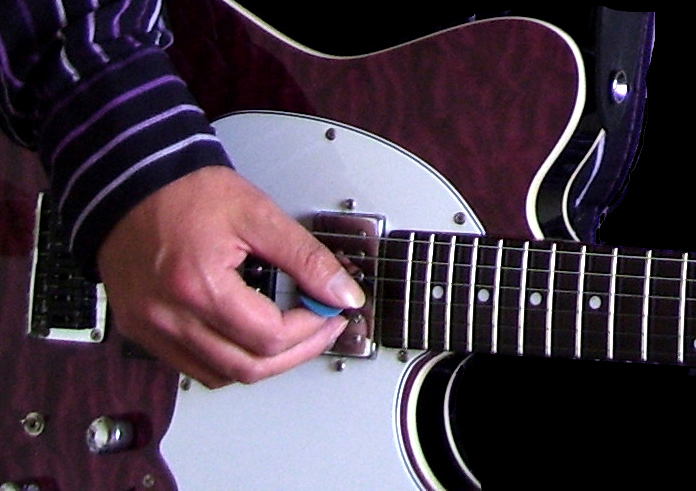

Go Play Guitar
Guitar Tuition
Guitar tuition from experienced teacher/ former touring and studio session guitarist.
currently offering guitar lessons in Bishop Auckland, Barnard Castle and surrounding areas.
25 years teaching experience including 12 years as a peripatetic music teacher in schools.
Styles range from rock, pop, classical, folk and blues on electric guitar, acoustic or bass.
Lessons can be for fun and personal development or take a more formal approach
Call now for availability and prices-
Contact Andy on 0 7 5 7 0 8 7 6 5 2 1
email - goplayguitar1(at)aol.com

.
Lessons are tailored to suit pupils needs and requirements according to musical taste and ability.
Teaching begins with visual/ audible demonstration and explanation, aided by standard notations
of tabliture and music score, with the practical goal for students to quickly
develop the abililty to play popular pieces.
studying towards grades with Trinity rock & pop, Trinity classical or RGT
(London College of Music) examination syllabuses.
website- www.goplayguitar.co.uk
FAETC teaching certificate/ Grade 8 rockschool guitar
Enhanced DBS certificate.